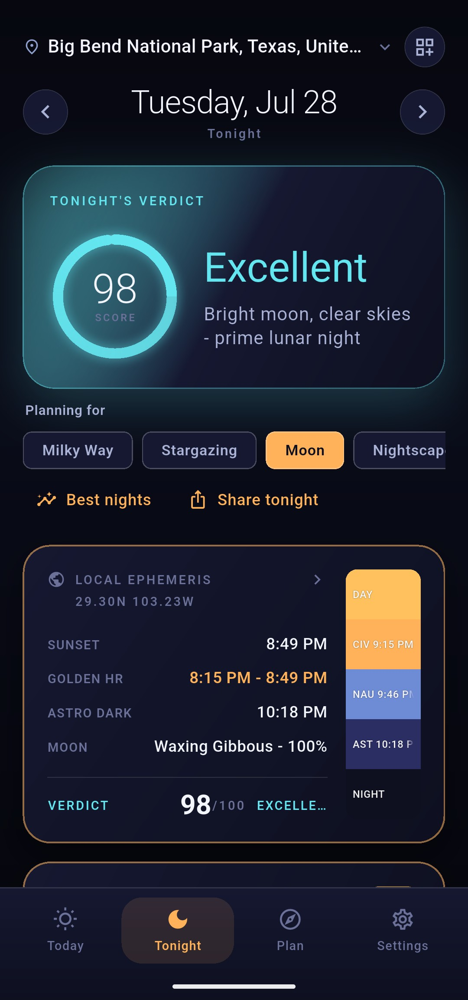
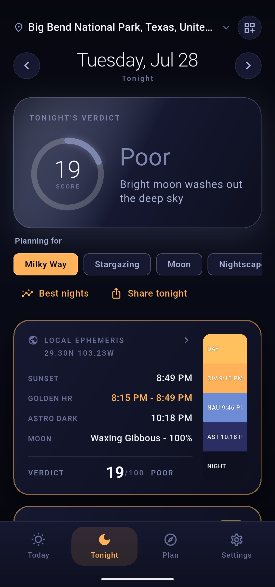
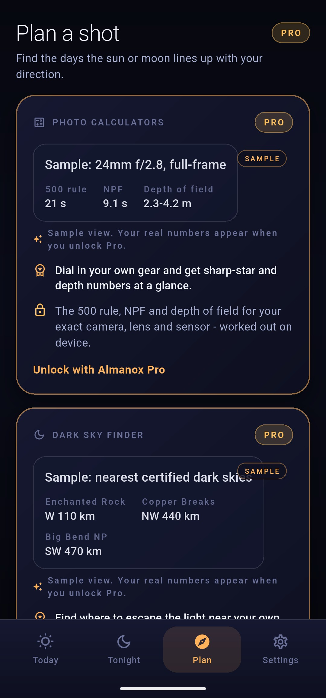

Almanox answers one question - is tonight worth heading out, and if so, where, when, and how. This guide walks through every part: reading the verdict, planning the Milky Way, lining up a sun or moon shot, the photo maths, and finding truly dark skies.
Almanox uses your location, or add any place by name. Every reading - times, verdict, Milky Way - is computed for exactly where you stand.
Open Tonight for a single 0-100 score that fuses darkness, moon, Milky Way height and cloud into one honest answer.
Scrub the day on Today, line up an alignment on Plan, and jot what you shot in your journal - it remembers, per place, per night.
A page per tab - what each readout means and how to use it.
The sun-path arc, the twilight ladder from astronomical dawn to dusk, day length, the moon card and live sun/moon positions.
Read →The 0-100 verdict, the ephemeris and the twilight ladder - the flagship "is tonight worth it" screen.
Read →The sun/moon alignment planner and the photo calculators - line up the shot and get the settings.
Read →GPS, city search or exact coordinates - save the places you shoot and switch between them in a tap.
Read →Light, Dark and AMOLED, seven accents, reorderable tabs and cards, backup, and golden-hour/dark-sky/aurora alerts.
Read →Each chapter is a deep dive with the exact readouts, what they mean, and how to act on them.
How the 0-100 score is built from darkness, moon interference, Milky Way height and cloud - and what Good, Fair and Poor really mean.
Read →Galactic core rise, peak altitude and the exact moonless window to shoot it - wherever you are.
Read →Find the days the sun or full moon lines up with your direction - the sunrise-behind-the-arch shot, planned to the day.
Read →The 500 rule, the stricter NPF rule, and depth of field with the hyperfocal distance - for your exact camera and lens.
Read →The nearest certified International Dark-Sky Places, ranked by distance with the direction and a rough drive.
Read →


Almanox is a one-time purchase - no subscription, no ads, no account. Everything is computed on your device.